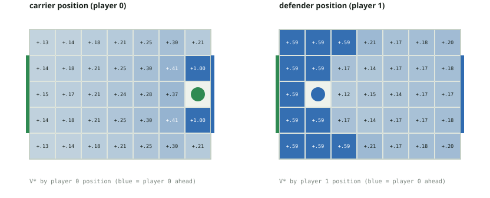
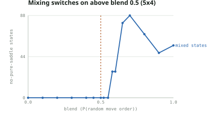
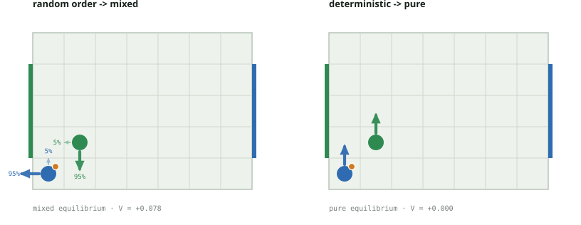
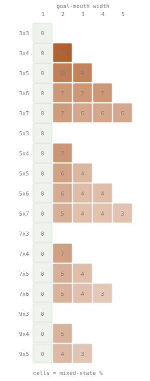
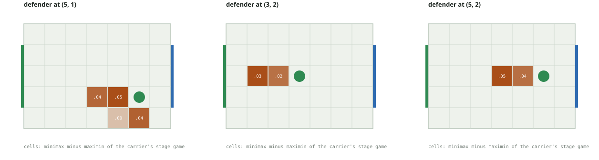
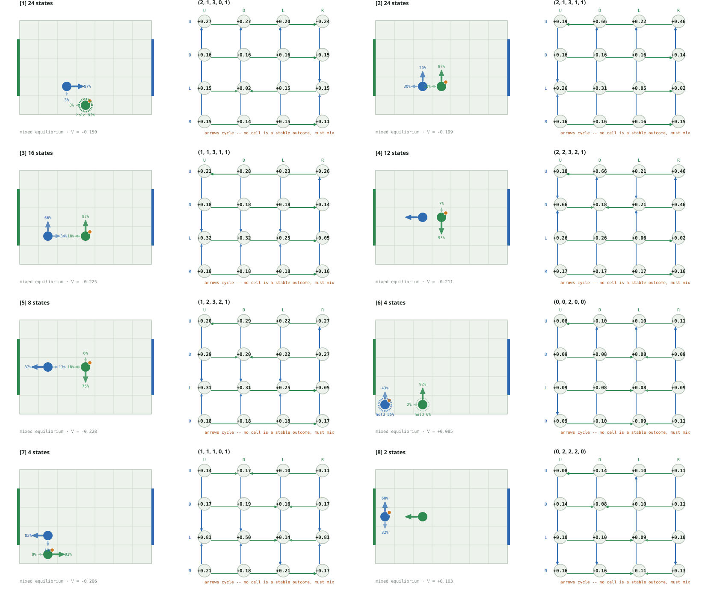
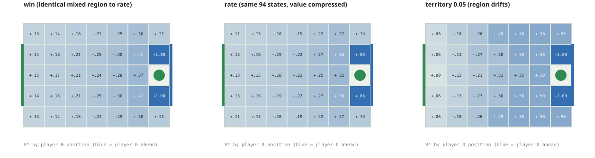
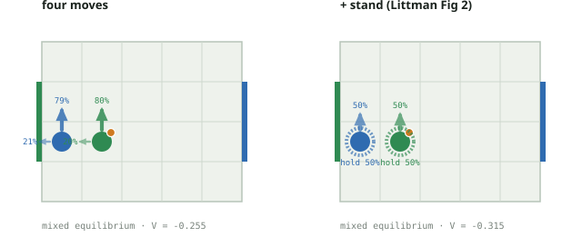

Multi-agent reinforcement learning · research report
A pure-first Nash‑Q approach: where a two-player soccer Markov game does — and does not — need mixing, and how much LP work that saves.
The kickoff. 7×5 grid, 2 380 non-terminal states. Player 0 (blue) carries the ball and attacks the right edge; player 1 (green) the left. Start positions are the ones the A10 page assigns this netID. Actions U D L R are chosen simultaneously; reward is +1 / −1 / 0, zero-sum.
Abstract
The game is zero-sum, so at every state the stage game is a payoff matrix M(s)[a₀, a₁] = E[R + γV(s′)] and the Shapley (1953) fixed point is the minimax value:
The Q = R + β Nash(Q′) update is this operator. The A10 game is undiscounted (±1 at a goal, tie after 100 steps); γ < 1 is a contraction device for value iteration and RQ4 shows the split holds across γ. Three stage backups: pure (the maximin security value — a fast lower bound, not a Nash value when it is below the minimax), mixed (the LP minimax value, via scipy HiGHS), and hybrid (the pure saddle value where maximin = minimax, the LP elsewhere — exact everywhere). Support enumeration (support_enum.py) finds all equilibria, including of general-sum games.
The A10 game is undiscounted, so it is solved exactly by 100-step backward induction (run_finite_horizon, experiments/undiscounted.csv):
| move order | mixed stage games | V(kickoff) | pure equilibrium? |
|---|---|---|---|
| deterministic (exact A10) | 0 | 0.000 | yes — pure (non-stationary) |
| coinflip tie-break | 0 | 0.000 | yes |
| random move order | 3 148 (404 states) | +0.459 | no |
The deterministic equilibrium is constructive and memoryless: each player's win attractor (states from which it forces a goal, soccer_nash/attractor.py) equals its V* = ±1 set, and the pure profile "attractor move on your winning set, safety move elsewhere" realizes V* at every state (scripts/positional.py) — the game is positionally determined.

The stationary γ < 1 solve agrees and is faster — 0 no-pure-saddle stage games on the deterministic game at every γ from 0.5 to 0.995, and 94 / 2380 on the random game at γ = 0.9 (V(kickoff) = +0.164 at the netID start). The no-pure-saddle count never depends on the kickoff.
The deterministic and coin-flip value functions are identical (max |V_det − V_coin| = 0 at every γ): optimal play never enters a losing contest, so the coin is never flipped. Only Littman's random move order — where a ball-steal depends on who resolves first and on both players' targets — creates matching-pennies subgames. Interpolating the two (move_order="blend", resolve by random order with probability blend) shows the onset is sharp: 0 mixed stage games for blend ≤ 0.5, dozens at blend = 0.52, and an overshoot to ~1.5× the fully-random count near blend ≈ 0.7 before it relaxes (scripts/blend.py, docs/blend.md). A minority of random-order resolution is washed out by the deterministic tie-break.


Two numbers, kept apart: the LP-call rate is a property of the game and reproduces exactly; wall clock is a median of 5 repeats and depends on the machine and LP backend (scripts/benchmark.py).
| solver | sweeps | LP calls | states needing LP | median wall clock |
|---|---|---|---|---|
| pure (lower bound) | 18 | 0 | — | 0.3 s |
| hybrid exact | 108 | 9 672 | 3.95% | 13.2 s |
| all-LP exact | 108 | ~3.6 M | 100% | ~8 min |
The hybrid solves an LP on only the 3.95% of states lacking a pure saddle — a ~25× per-sweep reduction — and matches the all-LP value to 4e−16. The wall-clock ratio (~13 s vs ~8 min) is larger but less portable: it also reflects matrix construction and the LP backend. Mirror symmetry (run_symmetric, deterministic dynamics only): every state has a distinct board-flip‑plus‑player‑swap mirror, so the 2 380 states are 1 190 pairs — reconstruct one from the other by V(mirror(s)) = −V(s), cutting the deterministic solve 0.33 s → 0.23 s.
The LP-call rate counts the whole state space. Under the Nash policy from the kickoff only 456 of 2 380 states are ever reached, and the 94 no-pure-saddle states carry 41% of the discounted occupancy — a 2× over-representation on the path, 10× vs. the raw count (soccer_nash/occupancy.py, docs/occupancy.md). The carrier's optimal march to goal runs straight through the contested band; four of the eight most-visited states are mixed. The mixed structure is rare to store and common to use.
| rounds / sweeps | matrix-game solves | wall clock | |
|---|---|---|---|
| value iteration | 108 | 9 672 | 13.8 s |
| policy iteration | 21 | 1 879 | 17.2 s |
5× fewer LP solves — but the frozen strategies' distance to the current Nash stays maximal (a full pure-strategy flip) for 16 outer rounds, then collapses to < 1e−8. The thrashing eats the saving; on the deterministic game it is strictly worse. Value iteration with the per-sweep Nash cache wins here.
Goal-mouth width, not board size, is the gate. The phase diagram sweeps every board with width ≤ 11, height ≤ 9, width·height ≤ 45 against goal widths 1 to height−2 (scripts/phase_diagram.py --analyze, experiments/phase_diagram.csv).


Geometry predicts the label (scripts/geometry_model.py): a depth-4 decision tree on carrier-frame features separates mixed from the rest with precision 0.96, recall 0.91. The dominant feature is defender_can_intercept — the defender within one move of the carrier's forward cell (P(mixed) = 0.44 vs 0.002).
Beyond prediction, the 94 mixed states canonicalize under the board mirror to 47 pairs and cluster into 8 geometric templates (scripts/templates.py, docs/templates.md).
| states | geometry | support | structure |
|---|---|---|---|
| 24 | defender 1 ahead, carrier one row off the goal row | 2×2 | matching pennies |
| 24 | defender 1 ahead, same row, carrier on a goal row | 2×2 | matching pennies |
| 16 | defender 2 ahead, same row, carrier on a goal row | 2×2 | matching pennies |
| 4 | defender diagonally adjacent, carrier off the goal row | 2×2 | matching pennies |
| 14 | defender 1–2 ahead, same row, on a goal row | 2×1 | near-pure saddle |
| 8 | defender 2 ahead, same row, on a goal row | 3×2 | degenerate (row ties) |
| 4 | defender 2 ahead, carrier off the goal row | 3×3 | wider mix |
The four 2×2-support templates are all verified matching pennies — the carrier's best reply flips between the two defender columns and vice versa — covering 68 of 94 states: carrier {climb, advance} against defender {cover a lane, hold the forward cell}. All 94 share one value across every equilibrium; 64 have a unique one.

Why the mix is unavoidable. A mixed stage game needs all three of: a stochastic (½–½) resolution order; a goal mouth wider than one cell, so the carrier has two scoring lanes; and a defender close enough to contest the forward cell but unable to cover both lanes in one move. The carrier climbs or drops, the defender guesses which — matching pennies. Drop any one clause — a single goal cell, deterministic resolution, or the coin-flip tie-break — and every stage game has a pure saddle. The full argument and one stage matrix per template are in docs/templates.md. For the single goal cell the theorem is partly proved (docs/proof.md): the defender has a closed-form optimal strategy — guard the one cell — and every stage game is dominance-solvable, machine-checked for all boards up to 11×5.
Every one of the 94 no-pure-saddle stage games sits within 0.07 of a pure saddle (minimax − maximin, median 0.029) — the equilibria are shallow, and the exact mixing weights are numerically delicate. What is robust: 68 have a 2×2 support and all 68 are structurally matching pennies, and the value of mixing — V(hybrid) − V(pure maximin) — is +0.13 on average at those states. It compounds along a path: at the centred kickoff a pure-strategy player secures only a draw (0.000) where mixing is worth +0.15 (scripts/mixing.py, docs/mixing.md).
The default game rewards a win — first goal ends it, value P(win) − P(loss). A second objective, scoring="rate" (scripts/reward.py), keeps playing: a goal scores ±1 and restarts with the ball to the conceding team, so the value is the expected discounted goal difference and γ < 1 is load-bearing. On the 7×5 random-order board:
| objective | no-saddle states | value range | V(kickoff) |
|---|---|---|---|
| win — P(win) − P(loss) | 94 | [−1.00, +1.00] | +0.150 |
| rate — expected goal difference | 94 — the same 94 | [−0.88, +0.88] | +0.132 |
The no-pure-saddle set is identical — 0 states enter or leave. A mixed Nash equilibrium is an equilibrium of a single stage game M(s); changing how the horizon is scored rescales M(s) through V(s′) but does not cross the maximin = minimax boundary. The value range compresses (±1 → ±0.88): under rate a lost position is not a cliff — conceding restarts play with possession, a floor under every state. Details in docs/reward.md.

Littman's 1994 soccer game has a fifth action, stand, and his Figure 2 — a carrier pinned against its own goal by an adjacent defender — is the textbook "soccer needs mixing" example: the carrier must randomize between standing and moving. Adding stand to the random-order game (n_actions=5, scripts/littman.py) on Littman's 5×4 board:
| action set | no-saddle states | stand in the mixed support | V(kickoff) |
|---|---|---|---|
| N, S, E, W | 56 | 0 | +0.147 |
| N, S, E, W, stand | 56 | 48 | +0.172 |
The fifth action does not move where mixing happens — 48 of the 56 no-pure-saddle states are shared, 8 swap in and 8 out at the margin — but it changes what the mix is: the carrier now hedges with stand in 48 of 56 states rather than with retreat, and every player is slightly better for the option (V(kickoff) +0.147 → +0.172). The Figure 2 state is a clean matching-pennies matrix with equilibrium (½ climb, ½ hold). The deterministic game keeps a pure saddle at every state with five actions too.

value_bracket returns what the row player guarantees (minₖ(pM)ₖ), gets (pᵀMq), and can reach (maxᵢ(Mq)ᵢ). The true value is bracketed, so the width certifies the LP error.
With scipy's HiGHS the three agree to 1.1e−16 per stage game, 8.7e−10 accumulated. The concern is real for older vertex/simplex solvers — a non-issue here.
| deterministic | random (7×5) | |
|---|---|---|
| mixed states, γ = 0.5 → 0.9 → 0.995 | 0 → 0 → 0 | 122 → 94 → 102 |
| classification split, rel_tol 1e−12 → 1e−3 | stable | 604 / 1682 / 94 (stable) |
| classification, rel_tol 1e−2 / 1e−1 | — | 80 / 0 mixed |
| fixed 0.1-rounding flips a saddle | 0 | 62 |
Discounting mildly shifts which states mix; the classification is otherwise robust across nine orders of magnitude of tolerance, breaking only as the tolerance approaches the real minimax − maximin gaps. Fixed 0.1-rounding — proposed to force indifference — misclassifies 62 states, exactly the small-entry mixed region.
| exact hybrid Nash-Q | neural Nash-Q (mean ± sd) | |
|---|---|---|
| max |V − V_exact| | 0 | 0.55 ± 0.02 |
| mean |V − V_exact| | 0 | 0.13 ± 0.00 |
| action agreement | 100% | 43% ± 2% |
| pure/mixed classification | 100% | 67% ± 2% |
| exploitability | <1e−9 | 0.44 ± 0.05 |
| convergence (epochs to plateau, of 600) | exact | 469 ± 31; 3/5 still creeping |
| runtime | 9 sweeps, 0.3 s | 600 epochs, ~35 s |
Deterministic game only — train_nash_dqn rejects the stochastic variants, so the network never has to represent a genuinely mixed stage game. Even so it trails: it fits the ~1 000 zero-value states easily (small mean error) but misses the γᵏ bands and contested regions — worst-state error 0.55, policy about as exploitable as random play, mis-calls whether a state needs mixing a third of the time. Keep the exact solver as ground truth.